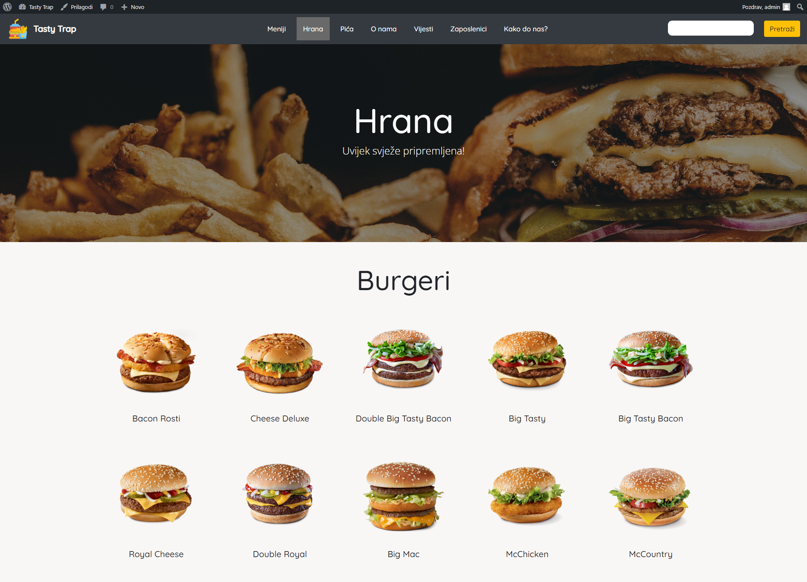
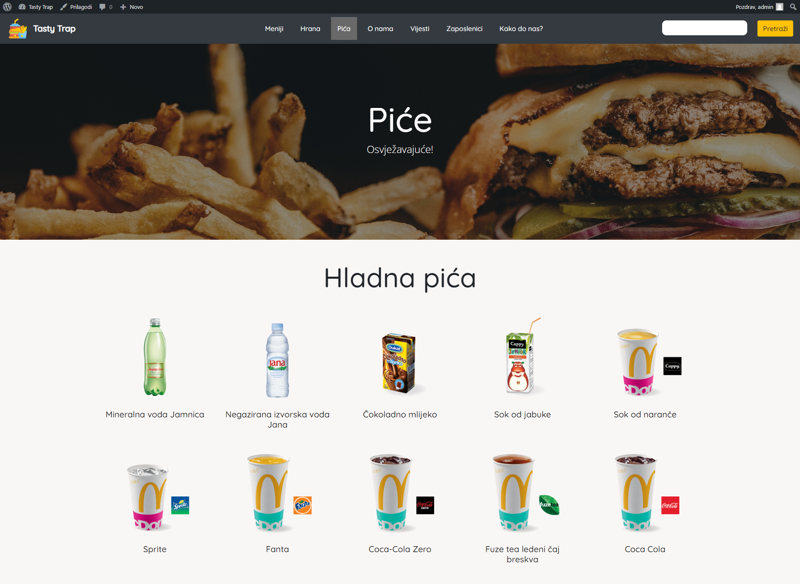
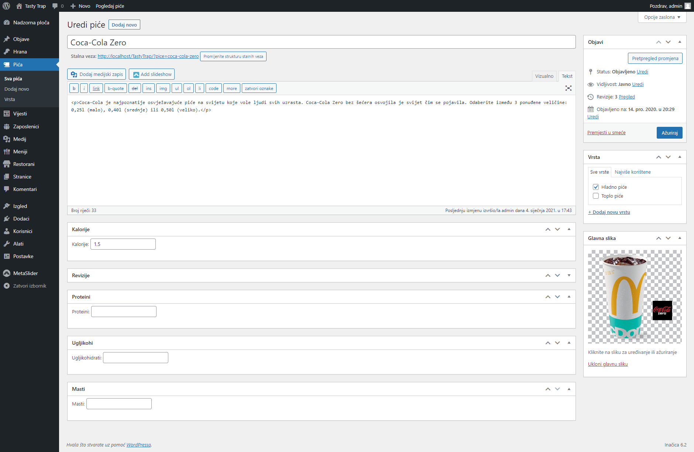
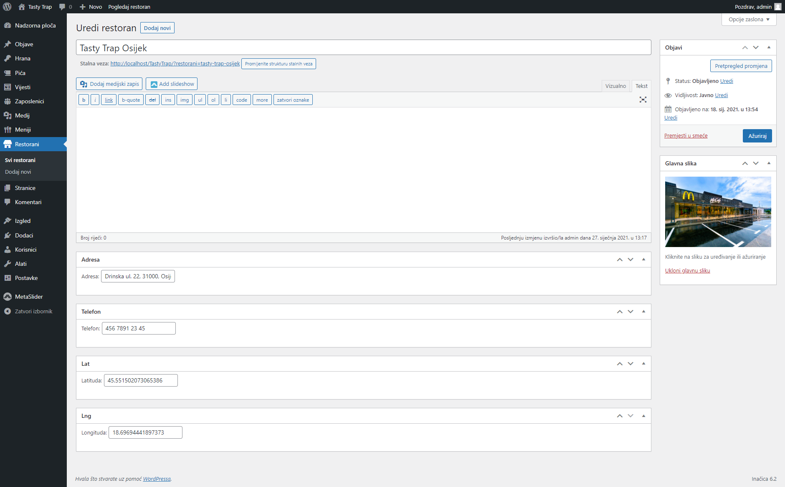
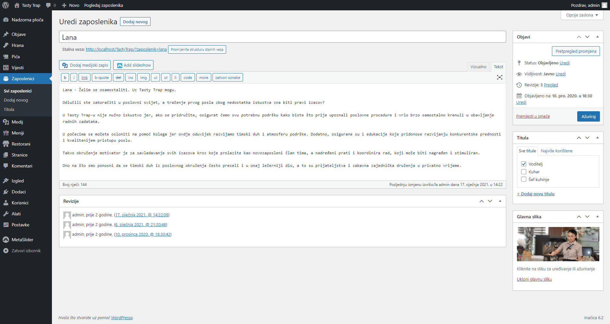

Tasty Trap
Projekt Tasty Trap je nastao na fakultetu kao projekt za konstrukcijske vježbe iz predmeta CMS sustavi.
Tema projekta je bila kreirati wordpress temu za fast food koristeći custom post type-ove, taksonomije i custom meta box-ove.
Stranica prikazuje sva naučena znanja o korištenju Wordpress tehnologijom koja koristi PHP programski jezik i MySQL za bazu podataka.
Administrativno sučelje
- cpt Meni sadrži cpt Hrana i cpt Piće povezanih preko custom meta box-ova
- cpt Hrana i Piće imaju svoje custom meta box-ove koji su nutritivne vrijednosti te se u prikazu menija one zbrajaju
- tu su još Zaposlenik, Restoran i Vijest cpt-ovi sa svojim custom meta box-ovima
- svaki cpt također ima i svoju jedinstvenu taksonomiju
- korišten je i plugin MetaSlider, za prikaz zaposlenika u obliku slidera
Na stranici je moguće:
- pregledati menije, njihovu hranu i pića
- pregledati hranu sortiranu po taksonomiji
- pregledati pića sortirana po taksonomiji
- pregledati vijesti
- pregledati istaknute zaposlenike i njihove priče
- pronaći lokacije na karti
- pretražiti stranicu









